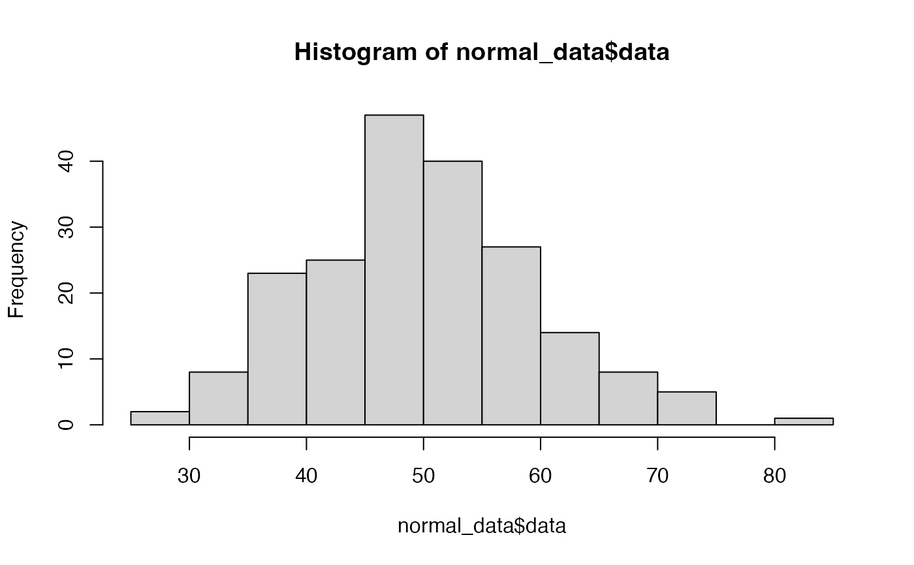
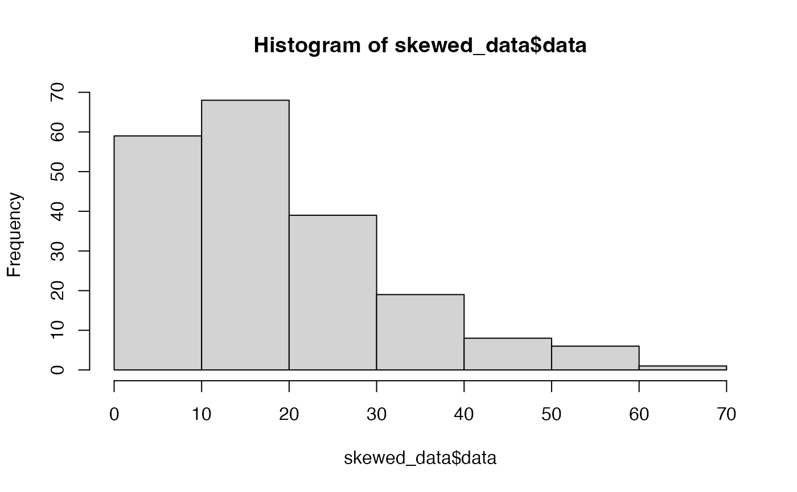

This function generates synthetic datasets with various distributions
for testing statistical functions and creating examples.
Usage
generate_synthetic_data(n = 100, type = "normal", seed = NULL)
Arguments
- n
Sample size (default = 100)
- type
Type of distribution: "normal", "uniform", "skewed", or "bimodal" (default = "normal")
- seed
Random seed for reproducibility (default = NULL)
Value
A list containing:
- data
The generated data vector
- true_mean
True population mean (if applicable)
- true_sd
True population standard deviation (if applicable)
- distribution
Type of distribution generated
Examples
# Generate normal data
normal_data <- generate_synthetic_data(n = 200, type = "normal", seed = 123)
hist(normal_data$data)

# Generate skewed data
skewed_data <- generate_synthetic_data(n = 200, type = "skewed", seed = 123)
hist(skewed_data$data)
